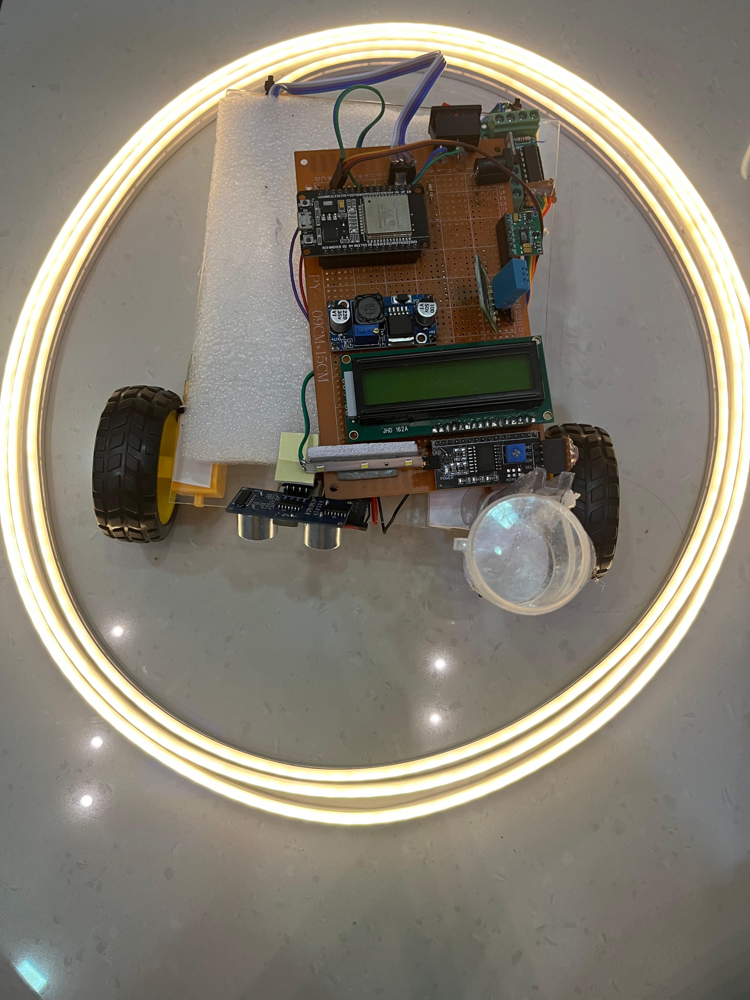

PROJECT DETAILS
- Mini Project :Rescue from Car Fires using embedded system and IOT. A system which releases the door lock, Seatbelt which are jammed during the car fire incident. Moreover a fire alert system is also implemented which will sent alert message to the respective persons.
- Final year Project : Nurse Robot which focusses on improving healthcare management systems without human intervention.IoT based exact location identifying robot designed to provide medicine to patients. It measures body temperature and heart rate and Sp02. Also provides UV sterilization.There are two modes of navigation:
1.Automatic mode (pattern following)
2.Manual mode ( using Blynk app).

- Bluetooth driven RC car using Arduino
- Front End Web Development :Project Celsius to Fahrenheit Converter
Internship
Completed 1 week Internship on Embedded Systems and introduction in Python Programming from KELTRON.